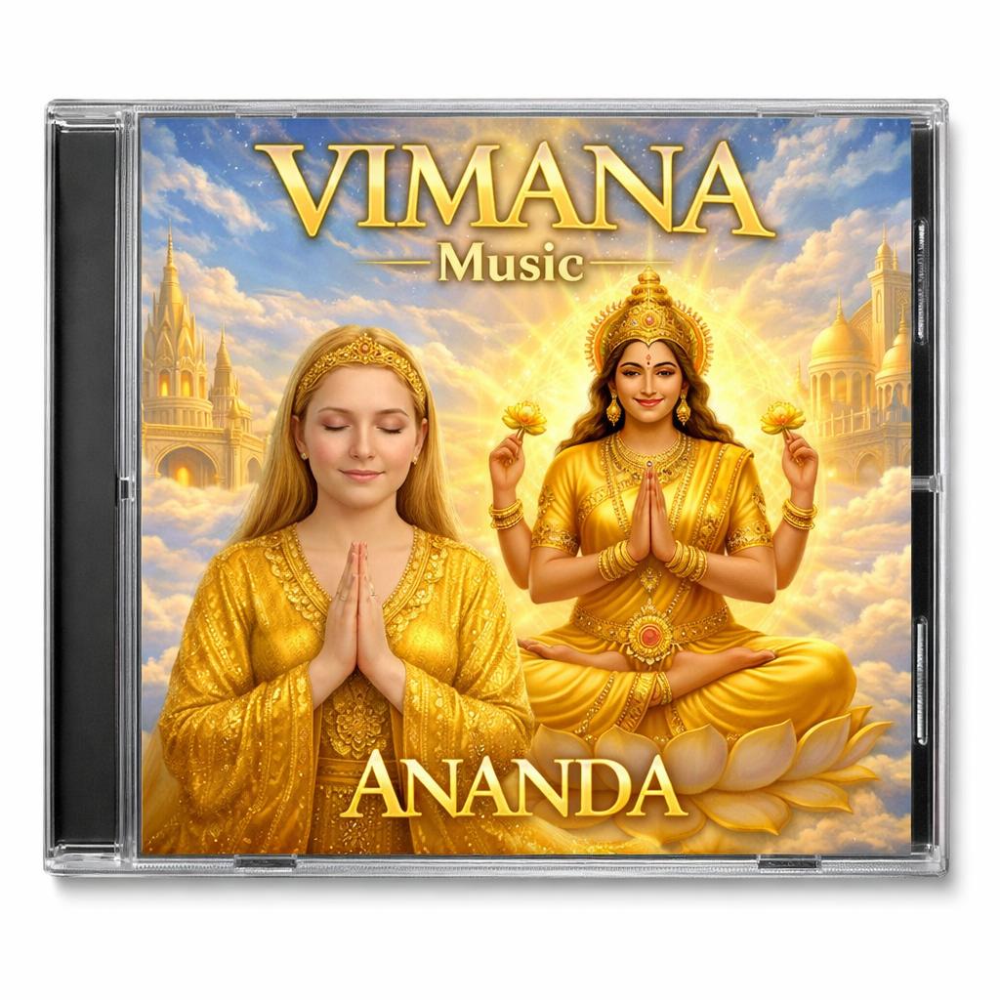
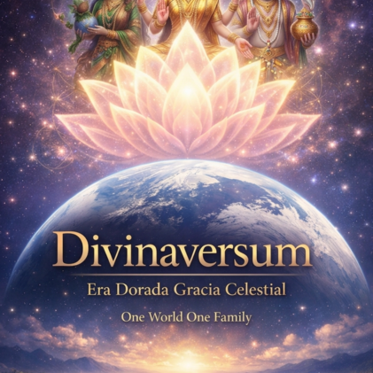
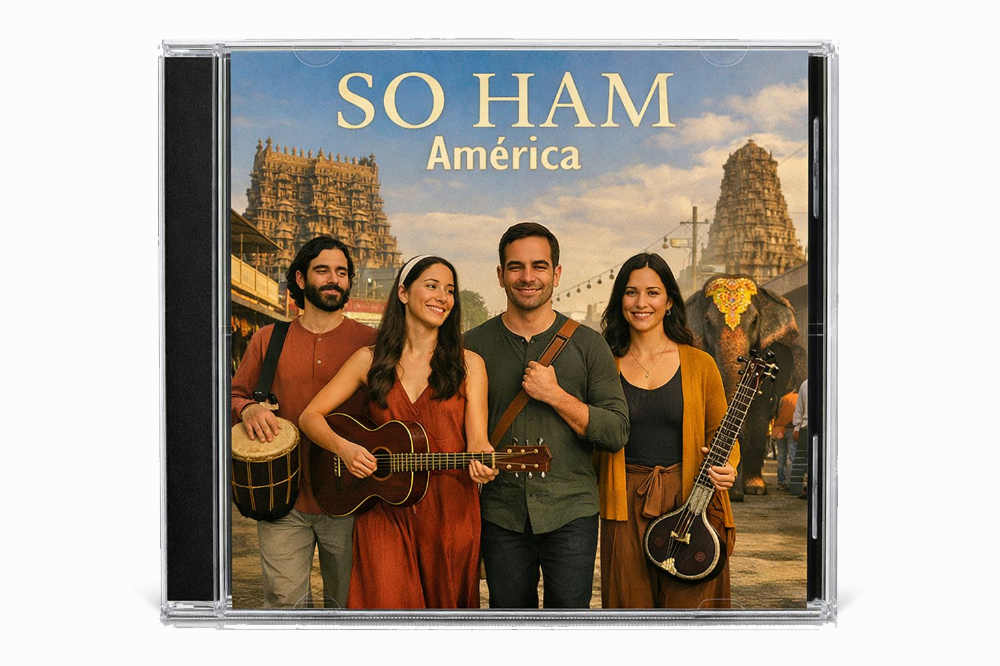

Vimana Music
Catálogo de Reproducción
Pistas Álbum Ananda

Sat Chit Ananda - Inglés
VimanaSat Chit Ananda Dicha Suprema
VimanaDe la Tercera a 5ª Dimensión + 5ª Frecuencia
VimanaAham Brahmasmi
VimanaSat Chit Ananda - Español
VimanaShivo Ham, Uno con El Supremo
VimanaAyam Atma Brahma
VimanaDespertamos al Amanecer Dorado
VimanaNueva Era Dorada - El Retorno 1
VimanaNueva Era Dorada - El Retorno 2
VimanaPistas Álbum Divinaversum

Un mundo una familia somos uno
DivinaversumOne world one family, juntos brillamos mas
Era Dorada Gracia CelestialLokah samastah sukhino bhavantu
One World One FamilyUn mundo una familia valores y cualidades divinos
DivinaversumLos cantos sagrados nos unen en armonia
Era Dorada Gracia CelestialSomos uno con la luz divina
One World One FamilyDespertamos juntos al amanecer dorado
DivinaversumUnidos en amor
Era Dorada Gracia CelestialEn mi corazon tu gracia vivira
One World One FamilyEl Salvador luz de naciones
DivinaversumRespira Paz La Nueva Tierra
DivinaversumAmanecer Un Mundo Una Familia
DivinaversumPistas Álbum Soham

So Ham
Soham AmericaSoy la forma de la paz
Soham AmericaSri Ram, Jey Jey Sai Ram Luz del Nuevo Sol
Soham AmericaBrahma Murari Tripurantakari
Soham AmericaSomos Uno (Cantos Eternos de Paz y Amor)
Soham AmericaOm Sri Laksmy Kuvera Namaha
Soham AmericaGuru Purnima
Soham America